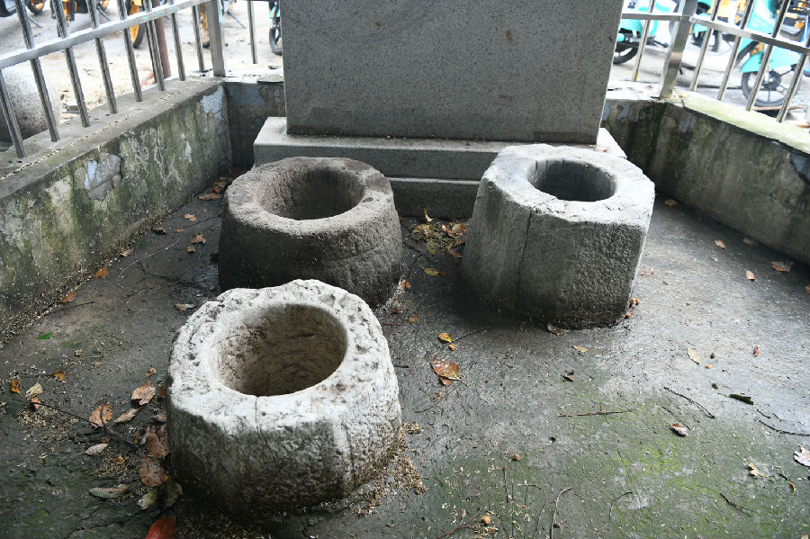

嘉兴市文物保护网 · 市级文物保护点 · 2022-05-16 · 原文

老妇保院三眼井位于南湖区建设街道勤俭路447号老妇保院内。建于1932年，为嘉兴私立三一医院（嘉兴市妇幼保健院前身）创始人陈召恩先生出资打造，其中一口井供医院内使用，另两口井供周边居民用水。原井边是一片名为“三一乐园”的绿地，供病人与产妇休息。1952年，根据陈召恩的遗愿，家人将三一医院捐献给了人民政府。2001年，医院在三眼井周围建造围栏。2018年，在三眼井西侧立碑纪念。三眼井呈“L”形排列，井内部均由青砖环形砌筑。三座井井圈材质、规格存在差异，推测为当年井建成后，收集成品老井圈置于井上作为取水口所致。该井为周边居民生活带来便利，是陈召恩先生善举的见证，也是嘉兴妇幼事业发展之路的见证，具有一定的历史价值。2021年被公布为嘉兴市文物保护点。